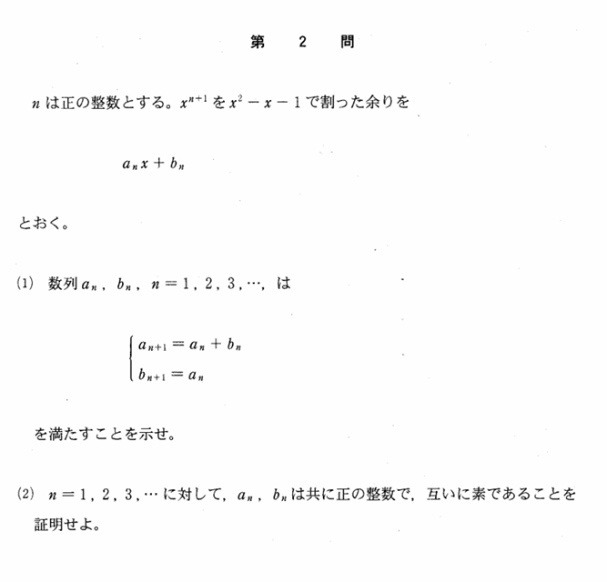

2002年 第2問
数列

分析
(1)で得られた漸化式を用いることが必要である。また、漸化式は解かずに漸化式を用いる定石に則らなければ少し時間的に不利になる。
大問1同様、処理はとても簡単。
ちなみに$\ \{a_n\},\{b_n\}\ $はそれぞれフィボナッチ数列に関連している。ここでは、フィボナッチ数列の隣り合う2つの項が互いに素であることの証明を要求されていて、本質的には1998年理系第3問(2)と同じである。
他にも、1992年文系第3問、2001年理系第4問など、フィボナッチ数列に関連している問題は数多くある。
誘導
類題経験があれば(2)は(1)がなくとも解ける難易度であるが、やはり(2)を考える上で(1)の結果を基にして考えると道筋が立つような誘導の設定である。むしろ(2)を先に作って、経験値によって左右される問題になってしまうことから(1)を追加したのかもしれない。